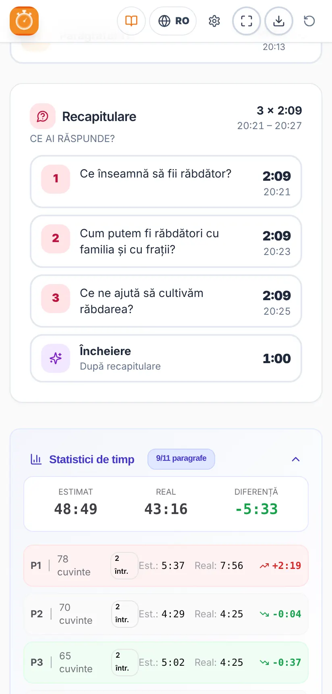

Manual de utilizare
Cronometru pentru studiu
Cum să pregătești și să conduci Studiul Turnului de veghe la timp
Cum să pregătești și să conduci Studiul Turnului de veghe la timp
Vrei să începi imediat? Vezi ghidul rapid în 7 pași.
Cronometrul pentru studiu îl ajută pe fratele care conduce Studiul Turnului de veghe să împartă bine timpul și să încheie la timp.
Încarci articolul săptămânii în format PDF, iar aplicația:
Aplicație neoficială. Este un proiect gratuit și independent. Nu este o publicație oficială și nu are legătură cu jw.org sau cu organizația Martorilor lui Iehova. Articolul este analizat pe dispozitivul tău: nu este trimis și nici păstrat pe vreun server.
Imaginile din acest manual folosesc un articol de exemplu inventat, nu un articol real din Turnul de veghe.
Instaleaz-o din Google Play: caută „Temporizador de Estudio” sau deschide acest link:
play.google.com/store/apps/details?id=com.comangelo.temporizadorestudio
Încă nu este în App Store, dar funcționează la fel din browser și poate fi pusă pe ecranul principal:
Deschide temporizador-estudio.vercel.app în browser. În Chrome și Edge o poți instala ca aplicație cu pictograma de instalare din bara de adrese.
Actualizări: când apare o versiune nouă, aplicația afișează mesajul „Este disponibilă o versiune nouă a aplicației.” cu butonul Actualizează. Nu se actualizează niciodată singură în mijlocul unui studiu.

De sus în jos vei găsi:
Cardul „Articolul din această săptămână” arată săptămâna curentă (de exemplu, 9-15 noiembrie 2026) și numărul Turnului de veghe în care se află. Cu săgețile ‹ › poți alege altă săptămână.
Turnul de veghe se descarcă în limba aplicației. Dacă aplicația este în română, se descarcă ediția în română; dacă este în engleză, ediția în engleză, și tot așa pentru fiecare limbă. Ca să descarci altă limbă, schimbă mai întâi limba aplicației (secțiunea 14). În portugheză se descarcă ediția pentru Portugalia sau cea pentru Brazilia, după cum ai ales.
Aplicația păstrează o copie a revistei. Săptămânile următoare din același număr se deschid direct cu „Deschide articolul din această săptămână”, fără să mai descarci nimic. Revistele salvate se șterg singure la 3 luni după ultima lor săptămână.
Pe calculator poți și să tragi PDF-ul oriunde pe ecranul de start (apare mesajul „Lasă aici PDF-ul Turnului de veghe”) sau să alegi dosarul în care păstrezi revistele, iar aplicația le va găsi singură.
Spune că revista nu a fost publicată încă? jw.org publică fiecare număr cu câteva săptămâni înainte. Dacă alegi o săptămână foarte îndepărtată, s-ar putea să nu fie încă disponibilă.


După ce încarci articolul vei vedea:
Pe cardul planului, mesajul „Comentarii: X s pe întrebare” îți spune cât timp există în medie pentru răspunsul la fiecare întrebare.
Dacă articolul este prea lung pentru timpul ales, apare avertismentul „Nu încape” cu cât lipsește. Poți mări durata sau alege o citire mai rapidă în Setări.

Fiecare paragraf ocupă un rând cu numărul, timpul planificat și ora aproximativă la care ar trebui să se termine. Etichetele colorate arată de ce trebuie să ții cont:
| Etichetă | Ce înseamnă |
|---|---|
| Iacov 5:7, 8 | Există un verset de citit. Se afișează referința exactă. |
| Imagine | Întrebarea trimite la o imagine din articol („Vezi și imaginea”). |
| Notă | Există o notă de subsol de comentat. |
| ★ Idee importantă | Întrebarea menționează un chenar sau o idee evidențiată între ghilimele. |
Atinge un paragraf ca să-l deschizi. Vei vedea cuvintele, timpul de citire, întrebarea și, dacă este lung, timpul suplimentar pentru mai multe comentarii. De acolo:
Paragrafele care au aceeași întrebare (de exemplu, „5, 6.”) sunt tratate ca un grup, iar butonul Următorul sare peste tot grupul.
Recomandat: în timpul studiului, deschide modul prezentare (secțiunea 9). Aici se explică funcționarea generală, care este aceeași în ambele moduri de afișare.
Pe telefon, butoanele principale sunt mereu jos, în bara de jos:


Pe cardul planului, sus, poți pune pauză și continua studiul. Mesajul „Trebuie să închei în m:ss” îți amintește cât a mai rămas până la ora de încheiere.
Ecranul nu se stinge cât timp studiul este în desfășurare, ca să nu fie nevoie să atingi telefonul. La final, telefonul stinge din nou ecranul ca de obicei.
Cardul părții în desfășurare (paragraf, introducere, întrebare de recapitulare sau încheiere) își schimbă culoarea în funcție de timpul scurs:
| Culoare | Când | Ce faci |
|---|---|---|
| ÎN TIMP | Până la timpul planificat. | Totul e bine: continuă așa. |
| PRELUNGIRE | A depășit timpul, dar cu cel mult 30%. | Începe să închei comentariile. |
| DEPĂȘIT | Cu peste 30% mai mult decât era planificat. | Treci la paragraful următor. |


În ultimele 5 minute ale studiului, paragrafele și întrebările de recapitulare nu au prelungire: trec direct de la verde la roșu, ca să nu se piardă timpul de la final. Încheierea își păstrează întotdeauna prelungirea.
Dacă o parte durează mai mult, nu e nicio problemă: când atingi Următorul, aplicația împarte din nou timpul rămas între ce a mai rămas, ca să închei la timp.
Acesta este modul recomandat de a conduce studiul. Modul prezentare evită distragerile: afișează doar ce îți trebuie, culorile verde, galben și roșu îți arată dintr-o privire unde ești și cum stai cu timpul, iar butoanele Următorul și Comentariu sunt mari și ușor de găsit și de apăsat.
Este gândit pentru a lăsa telefonul sau tableta pe pupitru sau pe podium: totul este mare și se vede dintr-o privire. Se deschide cu butonul ⛶ din bara de jos și se închide cu ✕ (sau tasta Esc pe calculator). Pe telefon se închide și cu butonul „înapoi”, fără să ieși din aplicație.
Sus arată ora actuală, ora la care se termină și timpul rămas, cu o bară de progres. În centru, partea în desfășurare cu cronometrul și culoarea ei, plus etichetele (de exemplu, Citește Iacov 5:7, 8). Jos, butoanele Comentariu și Următorul.
Există trei aspecte. Le schimbi cu butonul de aspect ▦ (sus, în dreapta) sau din Setări → Ecran:


În modul prezentare, butonul mare avansează singur prin studiu: Începe studiul → Treci la paragraful 1 → Paragraful următor → Întrebare de recapitulare → Treci la încheiere → Încheie studiul. În ultimele 5 minute apare avertismentul că trebuie să închei.
Exemplu (articolul din imagini): într-un studiu de 60 de minute cu 11 paragrafe și 21 de întrebări (18 de la paragrafe și 3 de recapitulare), cu timpul pe răspuns de 35 de secunde, aproximativ 7 minute sunt pentru citire, 2 minute pentru introducere și încheiere și aproximativ 51 de minute pentru comentarii, adică puțin peste 2 minute pe întrebare.
Atinge ⚙ sus, în dreapta. Setările se păstrează pe dispozitivul tău și sunt împărțite în patru file:


| Filă | Ce poți schimba |
|---|---|
| Timp | Durata studiului (până la 60 min). Durata introducerii și a încheierii (de la 30 s la 3 min). Vizita supraveghetorului de circumscripție. |
| Citire | Viteza de citire a cititorului: Lent (150), Normal (180) sau Rapid (210 cuvinte/min). Timp pe răspuns (de la 30 la 90 s; se folosește și pentru fiecare verset, imagine, notă sau idee importantă). Paragrafe lungi sau grupate: Fără extra, Normal sau Mai multe comentarii. |
| Alerte | Sunet și vibrație (cu butoane pentru testare). Alertă de paragraf depășit, alertă „Mai sunt 5 minute” și până la două alerte înainte de recapitulare. |
| Ecran | Limba, tema luminoasă sau întunecată (cu patru variante întunecate) și aspectul modului prezentare. |
Dacă schimbi viteza de citire sau timpul pe răspuns în timpul studiului, schimbarea se aplică la studiul următor.
Verifică dacă telefonul nu este pe silențios, dacă vrei să auzi alertele. Vibrația funcționează pe Android; pe iPhone depinde de browser.

În săptămâna vizitei, activează comutatorul „Vizita supraveghetorului de circumscripție” pe ecranul de start (sau în Setări → Timp). Studiul durează atunci 30 de minute și paragrafele nu se citesc: rămân întrebările, versetele, imaginile și recapitularea. Nu uita să-l dezactivezi după vizită.

Aplicația funcționează în spaniolă, engleză, germană, italiană, franceză, portugheză, poloneză, neerlandeză și română. Schimbă limba cu butonul cu glob de sus sau din Setări → Ecran. Când schimbi limba:
Acest manual este disponibil în toate aceste limbi: folosește butoanele de limbă din partea de sus a paginii.

Statisticile de timp compară timpul estimat cu cel real pentru tot studiul și pentru fiecare paragraf, cu diferența în verde (mai repede) sau roșu (mai încet) și comentariile marcate. Te ajută să vezi ce părți au durat mai mult și să ajustezi data viitoare (de exemplu, viteza de citire).
Cu butonul exportă ⬇ din bara de sus poți salva planul studiului ca imagine (PNG) sau ca PDF, ca să-l tipărești sau să-l trimiți altora.
Ca să pregătești alt studiu, folosește butonul începe din nou ↻.